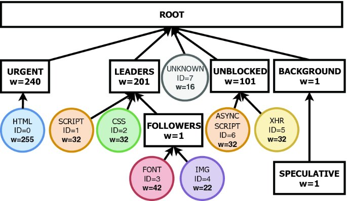

Общение фронта и бэка чаще всего выстроено через HTTP-запросы. При открытии страницы в определённом приоритете начинают отправляться запросы на подгрузку контента.

Схема приоритизации загрузки ресурсов: HTML → скрипты → стили → шрифты → картинки
Почитай про 418 (I'm a Teapot) и 451 (Unavailable For Legal Reasons) — будет что интересного рассказать! Дополнительно почитай про коды 520-526 от Cloudflare.